Selecting Data from a Database
Task 1: Connect to the Command Host
Firstly, we connect to an instance containing a database client, which is used to connect to a database.
- In AWS Management Console we go to Compute Service under Service menu and Select EC2 instance in EC2.
- After selecting the instance we choose connect. For Connect to instance, we choose the Session Manager tab and choose Connect. It will open the a terminal window. 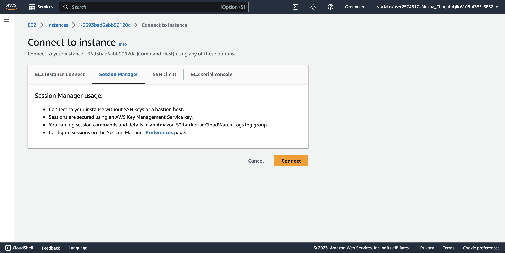
- To configure the terminal to access all required tools and resources, run this command:
sudo su cd home/ec2-user/
- To connect to the database server, we run following command in the terminal. A password was configured when the database was installed.
mysql -u root --password='re:St@rt!9'
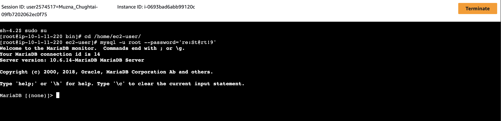
Task 2: Query the world database
In this task, we query the existing world database using various SELECT statements and database operators.
- To show the existing databases, enter the following command in the terminal.
SHOW DATABASES;
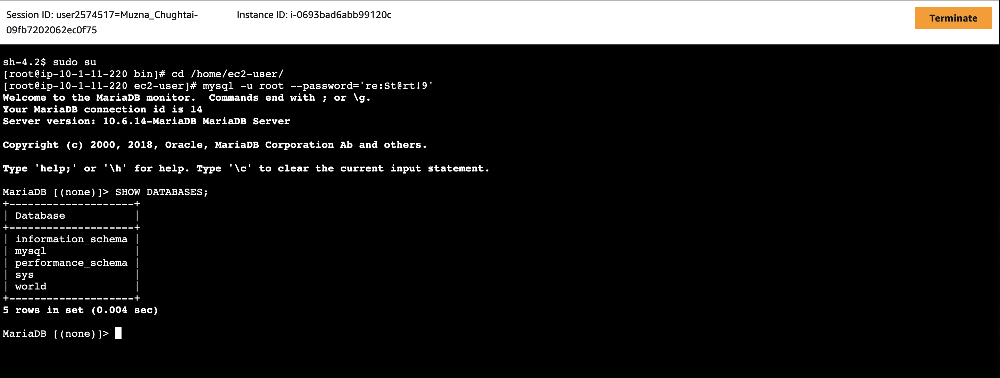
- To list all rows and columns in the country table, run the following query.
SELECT * FROM world.country;
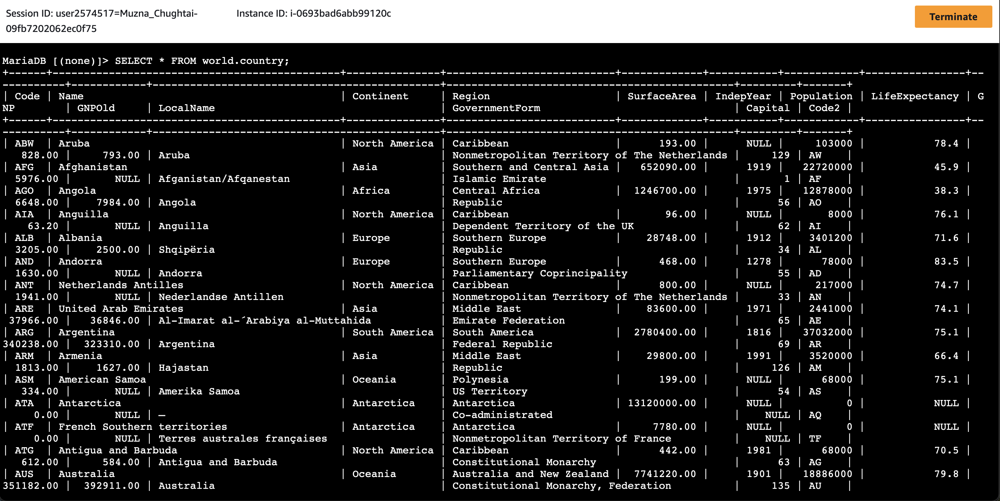
- To query the number of rows in a table, we can use the COUNT() function in a SELECT statement. To count all the rows in table, we can use COUNT(*).
To count the number of rows that have a value in a specific column, include the column name as a parameter in the COUNT() function:
for example, COUNT(Population). To list the number of rows in the country table, run the following query.
SELECT COUNT(*) FROM world.country;
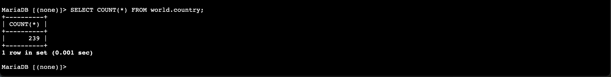
- To list all columns in the country table, run the following query. You run this query to understand the table schema.
SHOW COLUMNS FROM world.country;
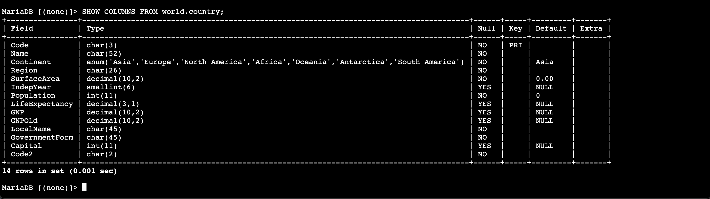
- To query specific columns in the world table, run the following query to return a result set that includes the Name, Capital, Region, SurfaceArea, and Population columns.
SELECT Name, Capital, Region, SurfaceArea, Population FROM world.country;
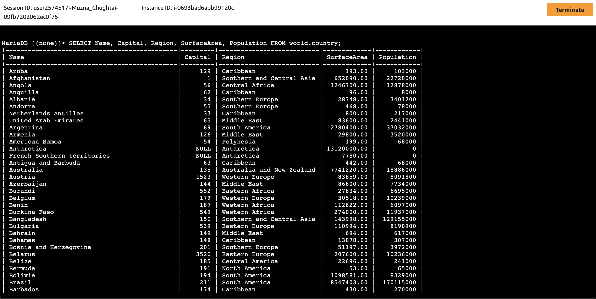
- Database column names are sometimes not user friendly. To add a more descriptive column name to the query output,
you can use the AS option. Run the following query that includes this option.
SELECT Name, Capital, Region, SurfaceArea AS "Surface Area", Population FROM world.country;
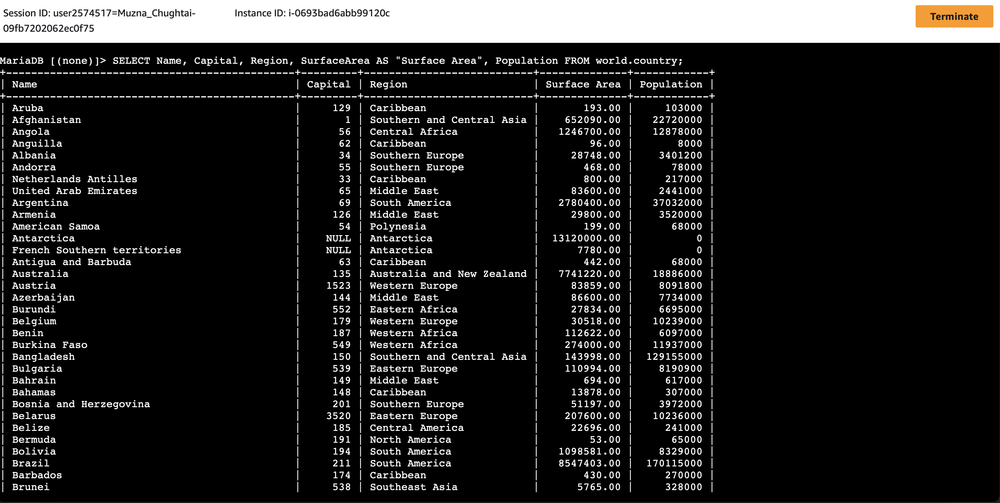
- Ordered result sets are easier to view and work with. If we would like to order the output based on a column, we can use the ORDER BY option.
In this example, we order the output based on the population.
SELECT Name, Capital, Region, SurfaceArea AS "Surface Area", Population FROM world.country ORDER BY Population;
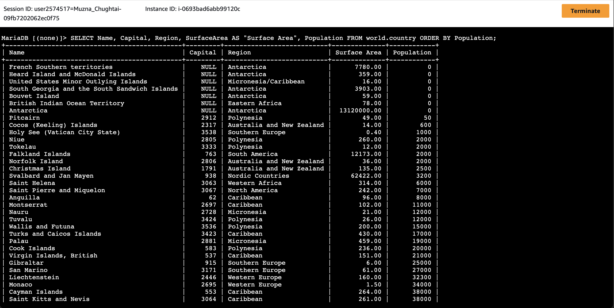
- To order data in descending order, use the DESC option with ORDER BY. Run the following command with this option.
SELECT Name, Capital, Region, SurfaceArea AS "Surface Area", Population FROM world.country ORDER BY Population DESC;
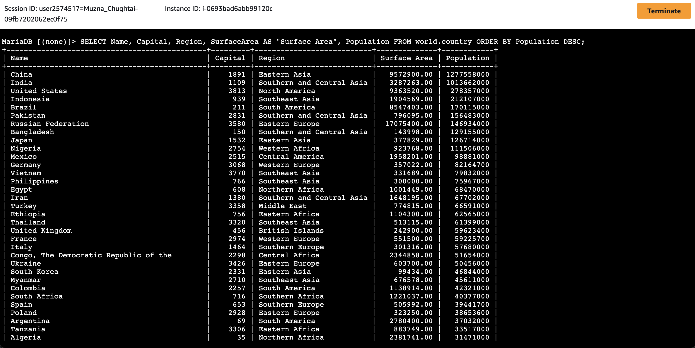
- We can add conditions to SELECT statements by using the WHERE clause. For example, to list all rows with a population greater than 50,000,000,
run the following query.
SELECT Name, Capital, Region, SurfaceArea AS "Surface Area", Population FROM world.country WHERE Population > 50000000 ORDER BY Population DESC;
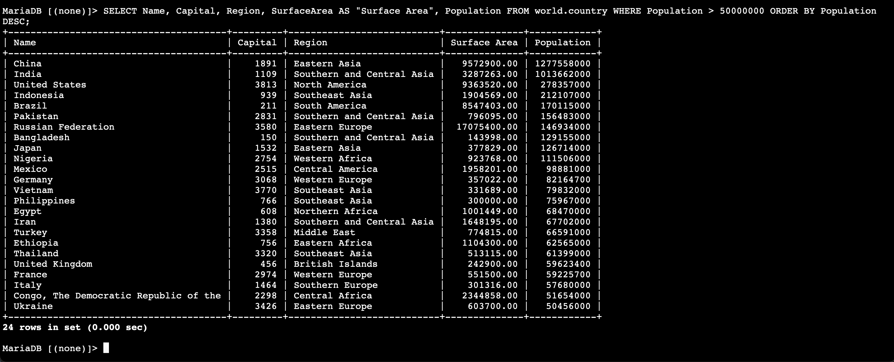
- The following query uses two conditions: all rows with a population greater than 50,000,000 and
all rows with a population less than 100,000,000. The query includes the AND operator to indicate
that both the conditions must be true. Run the following query in your terminal.
SELECT Name, Capital, Region, SurfaceArea AS "Surface Area", Population FROM world.country WHERE Population > 50000000 AND Population < 100000000 ORDER BY Population DESC;
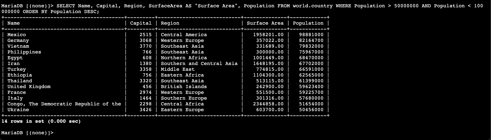
- In order to check which country in Southern Europe has a population greater than 50,000,000? we can run following command:
SELECT Name, Capital, Region, SurfaceArea AS "Surface Area", Population from world.country WHERE Population > 50000000 AND Region = "Southern Europe";
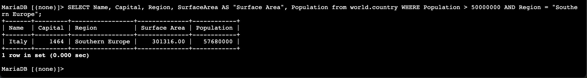
The ORDER BY option orders data in ascending order.
We have used the > comparison operator. Similarly, we can use other comparison operators to compare values.
We can construct a WHERE clause by using a number of conditions and operators.